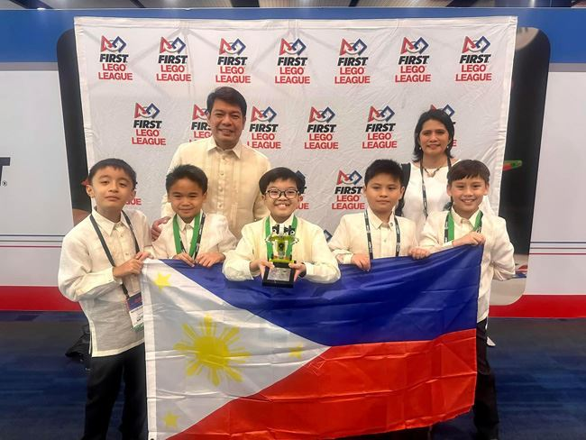
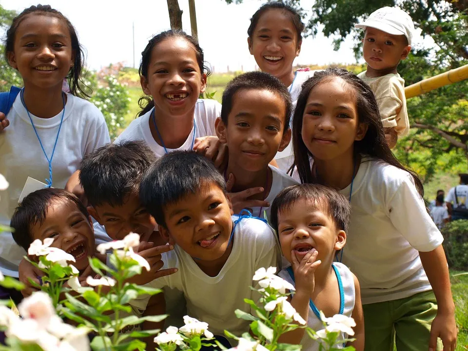
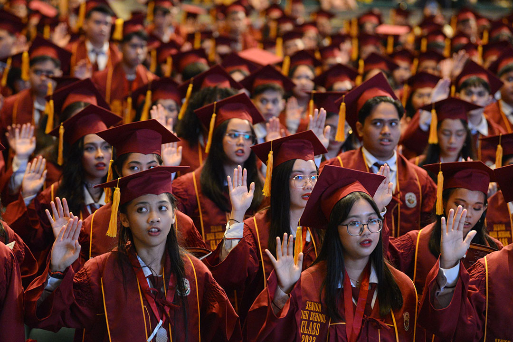

The DepEd Vision is focused on developing Filipinos who are passionate about their country, have the values and competencies to reach their full potential, and contribute to nation-building. As a public institution, DepEd is committed to continuous improvement for its stakeholders.
  